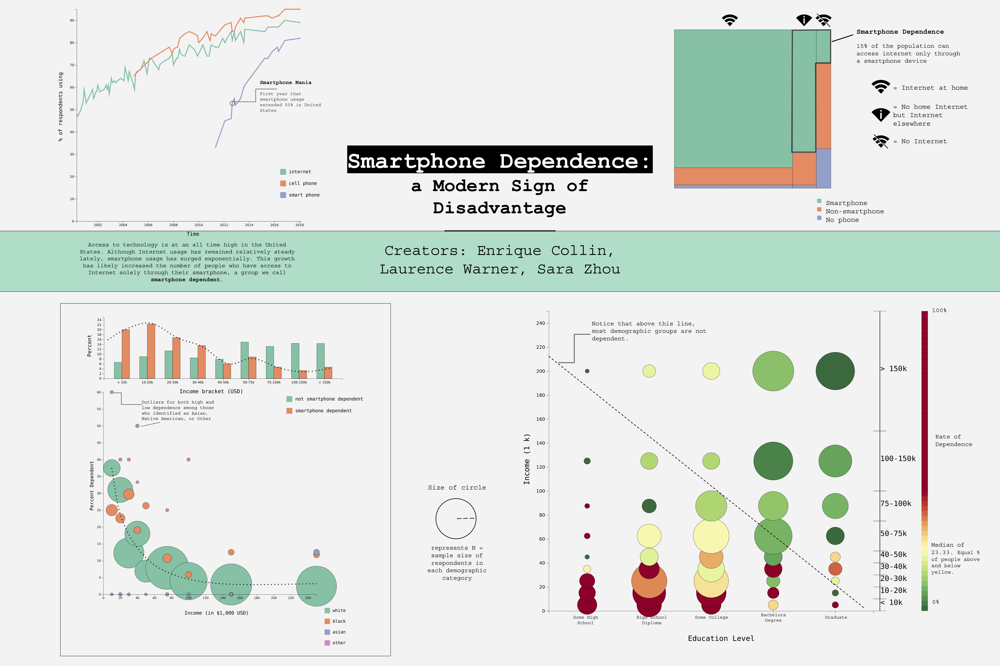
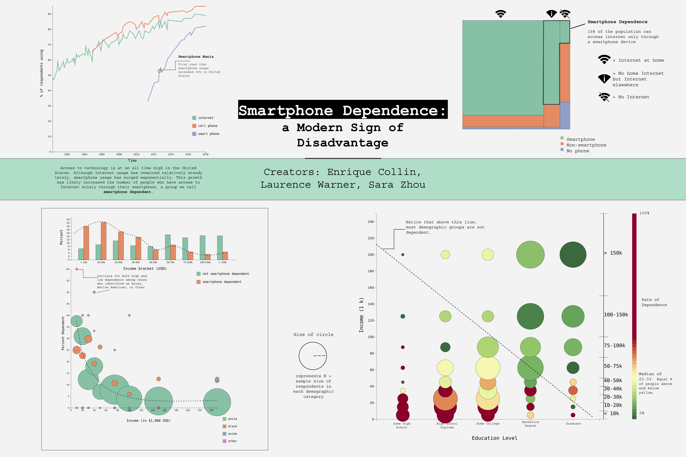

W4RNER is how Laurence Warner signs off on (the decreasing amount of) code he writes. He received a
M.A. in Computation from U Chicago on a UK Fulbright Award in 2019. He was the host of "net:work? A Fulbrighter Conversation" and was one of the authors of the nationwide expansion of Shortcut Mobile Inc. Recently, he has been working on
an integration of
Feed Readers into Social Media by extending the XML
language to include Social RSS Metadata.
His areas of interest include interactive 3D graphics
and user interfaces.
The best SF musical in town. Has a huge selection of music
and a thriving business as well. The last four good songs in the
series that we've written are in my Linksta.gram. Roughly 60% of actual books I've
read lately are SF or fantasy. Of course,
if you include mediocre or flat-out trash books, the percentage plummets...
making live music
Cerulean Sounds consistently has the best (and usually
the loudest) live music. Hawaiian shirts recommended for
those who want to be close to the stage. It's unsurprisingly located
at
Ceruleans.City
Finally, MC Beastly at the Silverlake
is one of the greatest comic strips in the universe. (The other is Hothead Paisan.)
Contact Info
Laurence Warner
Office 33459, PO Box 6945
London, W1A 6US
FlipPh.one: +447480068523
Fax: 🤷♂️ explain over a Zoom?
Email: W @ RNER.me (encryptable via ProtonMail)
First modified: Sat Jan 21 21:29:03 1995
Last modified: Tue Nov 2 19:00:20 2021
in the same generous spirit of
Tamara
Munzner - and all those other pioneers in the decade of my birth who dreamed that websites could foster human communication, creativity & collaboration - to whom it pays homage.
Nanos Gigantum Humeris Insidentes
Look how far we've come over the decades. We've got Moderner hit counters!
(pre-July '21 data from W4RNER.com)
 
